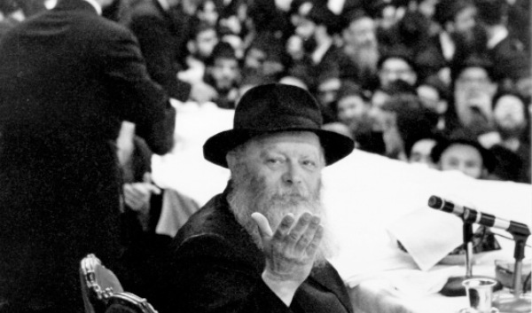

Facing the Challenges of the Final Moments of Exile
A Chabad girls ’ written forum discussion

After the Chaf-Ches Nissan assembly this year, we were fully into living with Moshiach at home for two days. It was really intense.
On the third day, after a festive supper in honor of Moshiach and anticipating his coming that very night, I woke up and discovered that I was still in the old familiar galus.
I thought: What is the point of all this? We wake up and he still hasn’t come, we go through our daily routine and yet we also need to continue with the anticipation in an active, sincere way. He will come today!
I can’t do this anymore. It is an intolerable tension with repeated disappointments; it’s a continuous state of readiness within a life of the usual stresses and daily routine. One cannot remain sane like this. Ad Masai!
My mother reminded me of the anticipation felt in 5751-5754 which she still remembers, which pulled me even further into despair. Who would have believed that more than twenty years would go by and we would still be saying, maybe today…
After this entire monologue, my younger sister wanted to hug me. What could I tell her when I hugged her back? “You know, he’s coming today?”
“Who?”
“Moshiach! He did not come at night, so today he will come! Let us get dressed up so we will be ready, okay?”
Then the niggling thought returns, will he come? Will he not come? Ad Masai!
***
How would you respond to this sincere girl? How can we live Moshiach in an intense, real way, while not getting used to reality as it is and not despairing and not going crazy?
Responses
ACTION
You write mainly what you feel. In my humble opinion, the point is not what I feel but what did I do?
All the anguish needs to be channeled into action. When the Rebbe cried out, he gave practical instructions. So instead of being preoccupied with your feelings and focusing all your energy on anticipation, simply get up and do something and actually bring the Geula.
T. Wasserman
New York
THINKING GEULA
Obviously, the best solution is for the Rebbe to show up already! In the meantime, I think the right approach is to focus on the Rebbe’s horaa that “all details in the avoda of shlichus need to be permeated with this point, how it all leads to kabbalas p’nei Moshiach.” That refers not necessarily to the big things alone, but to instill Moshiach within daily life.
Take for example the terrific booklet written by R’ Zalman Notik, Choshvim Geula (Thinking Geula), where he shows how to take the things that we do in any case and instill Moshiach within them.
It is a much deeper avoda and will not cause spiritual downfalls.
Good luck!
Tamari K
Yerushalayim
SHE’S RIGHT
I read what she wrote and I think she is right. It is very hard.
When I think along those lines I tell myself: The Rebbe himself said that the delay is not at all understandable, so who are we to attempt to explain it?
The Rebbe told us these things when he knew what would happen. He spoke sadly (28 Nissan), and in a spirit of strength, forcefulness, simcha, and hope (in the rest of the sichos), so that means that he knew we would handle it. How? I don’t know, but the Rebbe knows.
Yechi HaMelech!
Rochelle
THE REBBE IS AN EXAMPLE
It seems that the writer is afraid of going crazy, but the Rebbe said, “They say I am crazy about Moshiach, but I mean it with an emes.” There is nothing wrong with being crazy about Moshiach. If we screamed and demanded it sincerely, it would happen already. What greater role model do we have for feeling and yearning for Geula (“even before I began attending school”), while yet feeling the sorrow of the galus of every Jew. This is what gives us the strength to withstand it. If we were only able to live this way for five years, the Rebbe would not have told us so far in advance.
Crazy About Moshiach
STRENGTHEN THE FOUNDATIONS
I read your letter and thanks for sharing; it brings tears to my eyes. How long can we wait? … A friend from another Chassidic group told me sincerely that Chabad is a joke to many other Chassidic groups. She said this in connection with tznius in Chabad, but I felt it was connected with everything that Chabad represents. This is Chassidus? Where is the Yiras Shamayim? Where is the davening? Where is Moshiach? It was an uncomfortable feeling that calls for cheshbon ha’nefesh.
But you can’t argue with the truth. The Alter Rebbe, in his introduction to the Shaar HaYichud V’Ha’Emuna, which is called Chinuch Katan, speaks about a person in a state of katnus mochin (small-mindedness) in matters of Avodas Hashem. He needs to go back to the basics upon which his faith is built. Even in this state of hester panim (G-dly concealment), we need to remember the firm foundations that our emuna is built on, i.e. the clear prophecies that the Rebbe stated publicly, those that came true already and those that are taking place in our day (like the instability of the Egyptian regime); the tradition of the Chabad Rebbeim that Moshiach will be from Beis Rebbi, etc. things that you certainly know better than I do.
After igniting our emuna, we go back to the Rebbe’s demand of us that we await Moshiach every day. If we have a down moment, the problem is in the mind controlling the heart, because sadness and despair come from the yetzer ha’ra, because “strength and joy are in His place!”
In my opinion, there is a difference between knowing he is likely to come at any moment, because the time has come and the world is ready, and thinking he is coming this minute and then, when seeing that he doesn’t, to feel let down. The Rebbe said the Geula is already here and we just need to open our eyes. It is something that needs to be done and perhaps not everyone is ready to open their eyes and to open the door and draw the Geula inside.
Maybe people need to be “vessels” for the Geula, for otherwise it will be hard to take … maybe that is why we are waiting?
We are living in the process of Geula. Those who live in Eretz Yisroel feel how the prophecies are coming true (how the Arab world is warring against us on the one hand, and self-destructing on the other hand, while making itself repulsive to the world at large as it says in the holy Zohar). The many miracles have become routine.
So we see the Geula happening, but the galus is still terrible. The generation is immersed in materialism, a pauper riding a donkey … and there are divorces, sickness, drugs, confusion, avoda zara of all sorts, and all kinds of horrible things. Behind all these words are people in pain who are suffering. It hurts terribly. Ad Masai! I thought maybe this is like a spiritual Holocaust, and we are truly drowning. How far must we go before we are redeemed?
Maybe this is the emotional state that we need to live with, a painful cry from one side of the heart, along with a great joy over the fact that we are about to have the hisgalus, on the other side.
We need to strengthen one another with love. I once read a sicha of the Rebbe in Volume 1 that talks about our generation having to fulfill Torah and mitzvos specifically with love, from a life with all material good, and from there to forgo it all and to want G-d alone. This is our generation.
With blessings for Moshiach now, and the Jews had light and simcha!
Ariella
DON’T CLIMB TOO HIGH
The requirement here is for opposites to coexist. In my opinion, it is impossible to ask of children. To support my point, see the sicha of 28 Sivan 5751 in the middle of Ois 10 where it says, “Obviously, even when a child nowadays says he looks forward and asks for Moshiach, this is a real chiddush in Torah.” Then you have the seeming opposite in Ois 12, “He needs, as it were, to come on to the fact for a Jew agree, and furthermore, for him to want and proclaim that not only ‘the time for your redemption has arrived,’ but we already have the Geula.”
The differences are blatant. The child’s role is to say and sing, “We Want Moshiach Now,” happily and with emuna. The adult role is to agree, want and proclaim. The child anticipates and asks, and the adult already needs to be revealing the Geula.
This, in my humble opinion, needs to be the mode of behavior in the home, without attaining peaks of anticipation and then falling.
Aliza Tziyon
AVODA IN THE HARDEST PLACE
R’ Dov Tevardovitz says that it is hardest to be happy on Sukkos and Pesach, because then it is a mitzva from the Torah to rejoice and not to be sad at all. According to this, someone who has drawn the Geula into her life as you have, if you keep at it, will bring the Geula for all. It is the counsel of the Primordial Serpent to despair! Look at the results – where have these thoughts gotten you?
Bring the Geula with action and simcha,
Fruma A
A PROPHECY
THAT IS NOT IN VAIN
There is a horaa from the Rebbe to publicize the imminent Geula, so I suggest that every time you feel despondent, that you read the following lines.
The Rambam writes in Hilchos Yesodei HaTorah, Chapter 7, “It is a principle of our religion to know that G-d grants prophecy to human beings,” and about the mitzva to listen to the navi.
So we need to know that even now, before the Geula, there is the existence of prophecy as a foretaste and beginning of the prophecy we will have after the Geula. Furthermore, “A prophet whom another prophet testified, saying he is a prophet, as is the case with Nasi Doreinu and continues with the generation that follows him through his students etc. he is b’chezkas navi (has the halachic presumption of being a prophet).” “One is forbidden to wonder about his prophecy lest it not be true and it is forbidden to test him excessively etc. (10:5) as it says, “Do not test Hashem your G-d … because Hashem is among them” (excerpts from the sicha of Shoftim 5751).
Strengthening your emuna in the fulfillment of the prophecy that must take place and that our generation is the generation of Geula and “Hinei Hinei Moshiach Ba,” will push aside all the negative feelings from the “other side” that fights so strongly against someone like you, because you are likely to bring an end to its role in the world.
May we merit it already very soon!
Shaina G
New York
A POSITIVE OUTLOOK
I am reminded of a story about R’ Akiva who laughed while everyone cried, when they saw a fox exiting the Holy of Holies. It all depends on your perspective. Remember the clock belonging to the Chozeh that chimed merrily because we are another moment closer to the Geula?
You surely know the mashal about the check lost in a pile of garbage. As you get closer to the bottom you don’t despair; rather, you feel that in another moment you will find what you’re looking for. We are so close to the Geula; be happy! But you are not the one to give Hashem a deadline. Why? Because it passed long ago.
I think this is not what the Rebbe wants. Moshiach is the gateway to all things, but the Rebbe does not want us to merely stand and caress the gate; he wants us to bring all aspects of shlichus through it: actions, speech, thoughts. The Geula needs to be expressed in all ways, not just in heightened anticipation. (Aside from this, the despair that wafts from your letter is a red light. In such a state you can end up harming not only your emuna in Moshiach, but also other essential things).
Chani Levy
ANSWERS NOT QUESTIONS
I came across a sicha that fits with what you wrote, “My mother reminded me of the anticipation felt in 5751-5754 which she still remembers, which pulled me even further into despair. Who would have believed that more twenty years would go by and we would still be saying, maybe today.”
“This that Jews think that the galus is reality and Geula is a dream and when they say, ‘Hinei, Hinei Moshiach ba,’ that is a dream too, it is not in contradiction to emuna, because they believe in the coming of Moshiach. It is just that the emuna remains in a superficial way for them and does not penetrate deeply, so the Geula seems like a dream to them.
“…. This is not the opposite of Torah because the Torah itself says, ‘we were like dreamers,’ i.e. according to Torah galus is a dream, to the point that the feeling in the dream of galus is that Geula is a dream and galus is reality. No wonder that talk of the Geula surprises them.
“So too it is with all the questions that exist in galus about the Geula. For example, the Baal HaGeula said decades ago ‘L’Alter l’Geula.’ The question arises, how is it that it did not happen, and till today he [Moshiach] still has not come? We need to know that all the questions and doubts that we have come because of the dream of galus. From the aspect of galus we need proofs, explanations and reasoning.
“… This explains why we constantly talk and harp that ‘Hinei, Hinei Moshiach Ba,’ because this is true reality and not a dream! If he, G-d forbid, does not come by tomorrow or today, by Mincha, he will be spoken of again until they nudge so much, both here and up above, as it were, that they actually bring Moshiach.” (Sicha Pinchas 5744)
I have nothing to add.
C. M.
Kfar Chabad
THREE POINTS
1) We fulfill our role and demand Moshiach, but we need to remember that we are not in charge. “We were not willingly exiled and we won’t willingly …” We have no authority to decide, based on our feeling, when the scales will be tipped over; the most we can do is hasten the Geula that Hashem will bring to us when He so chooses.
2) In the Igros Kodesh (vol. 6, p. 150) it says, “I was shocked to read in your letter that you write about the despair that is burrowing in your heart, which is the opposite of our holy Torah.” So if you look at your state of mind as something contrary to Torah, it will soon pass. What will be left for you to do is farbreng.
3) This is not a chiddush. The Geula does not need to come because the Geula is here, and we just need to open our eyes. You move back and forth, looking at things as you ought to look at them, and then withdrawing, but that does not change the reality and the task of looking properly.
Good luck!
Noa Weiss
Ramat HaGolan
Beis Moshiach (staff). "Facing the Challenges of the Final Moments of Exile." Beis Moshiach, no. 897 (October 8, 2013).